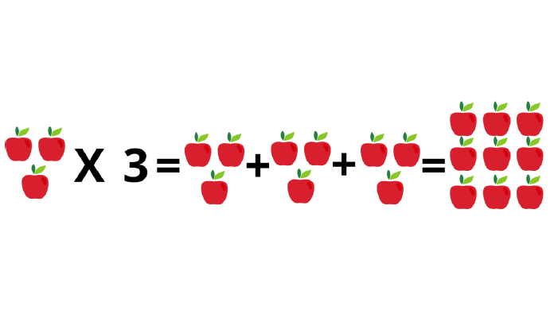

Potenciação
Um valor A potenciado por um valor B se torna um valor C é a potenciação do valor A sobre o valor B ou a multiplicação do valor A com ele mesmo em uma quantidade de valor B.
a^b = c
Exemplo:
Joãozinho tem 12 maçãs, Osmar falou que ia dar a quantidade de maças do Joãozinho ao quadrado, quantas maças Osmar deu:
Resposta: Osmar deu 144 maçãs.
Representação visual na reta do exemplo